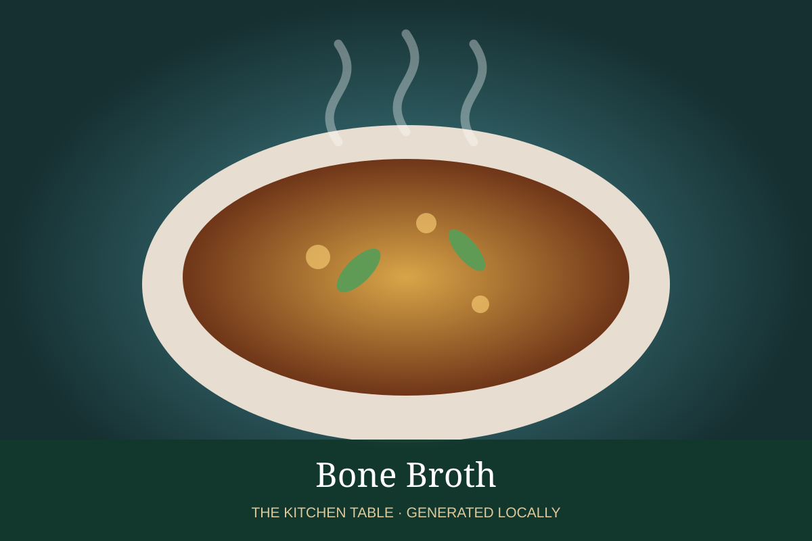

← Back to all recipes
BROTH & STOCK · TECHNIQUE
Bone Broth
Long-simmered mixed bone broth with pronounced gelatin and body.
Broth & StockTechnique

Ingredients
- 4 lb mixed meaty bones
- 2 tbsp cider vinegar
- 1 onion
- 2 carrots
- 2 celery ribs
- 4 qt water
Preparation
- Roast bones at 425°F until browned.
- Transfer to a pot with vinegar, vegetables, and cold water.
- Simmer very gently 8–12 hours, adding water if necessary.
- Strain and chill quickly.